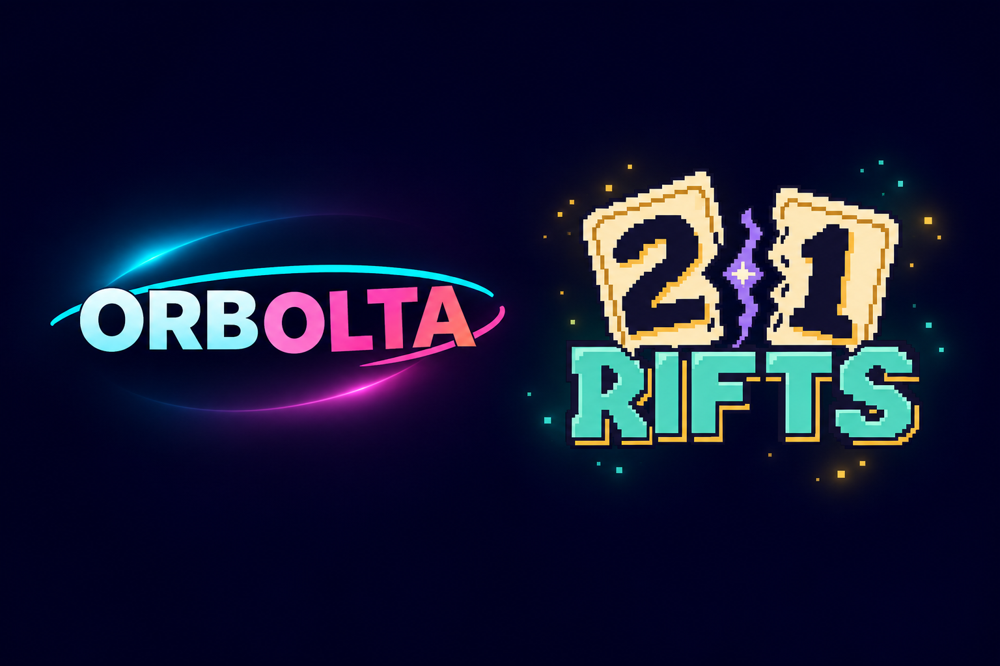

03 / Games / In development
21 Rifts: design, development, and playtesting.
Building a card roguelite where clear rules give each choice a little more weight.
- Project
- 21 Rifts · Games4Fun
- Implementation
- Native Godot game
- Status
- Alpha · development & playtesting

21 Rifts is a project at Games4Fun, the company I built with partners.
Give a simple action an interesting consequence.
21 Rifts is a single-player card-building roguelite about stabilizing fractures across a branching campaign. Players build combinations, improve a limited deck, and choose between safer routes and dangerous shortcuts.
The design challenge is making those decisions readable. A player needs to understand what a card can do, what a route puts at risk, and why a result happened—without losing the pace of a run.
Make the rules dependable. Let choices create variety.
Separate the result from its presentation.
The native implementation keeps game rules separate from the Godot presentation. The interface reveals committed outcomes rather than calculating rewards or advancing randomness itself.
Build a vocabulary players can learn.
Arc, Nova, and Void Circuits have distinct rules and identities. A consistent visual language helps players compare choices and understand the consequences of the cards they place.
Keep progression and saved runs in view.
A branching campaign, deck changes, and save compatibility connect individual encounters to the longer experience. A local improvement still needs to make sense within an entire run.
From exploration to a native game.
The project has moved through visual prototypes into a native Godot implementation. Development continues through iteration and playtesting, with attention to readable outcomes, saved runs, and campaign progression.
Playtesting is part of the design.
Rules that are clear in code can still be unclear on screen. Testing needs to examine both: whether the outcome is correct, and whether the player can understand it.
The same applies to progression. A single encounter can feel good while a longer run exposes pacing, balance, or recovery problems. Campaign acceptance remains a separate step from implementing a feature.
A game in progress.
21 Rifts remains in development and playtesting. The source repository is private. The game is not available to download or play through this portfolio. A launch date has not been announced here.
Next project